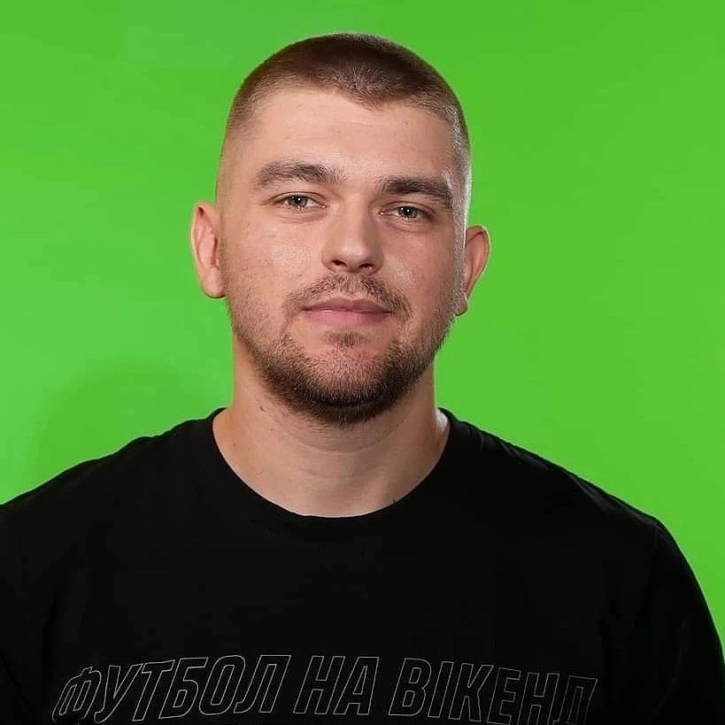

Новак Олександр
Анатолійович
Front-End developer

Контакти
Досвід роботи
(Серпень 2017-го року до сьогодні)
Медіа-холдинг 1+1 на посаді Спеціальний кореспондент проектів, проект "FootballHub".
Посадові обов'язки:
- Підготовка тем для майбутніх відеоматеріалів та сюжетів;
Написання сюжетного сценарію (синопсису)
Запис відеоматеріалів
Супровід монтажу відеоматеріалів
Підготовка SMM-супроводу матеріалу
Розробка ідей для графічних елементів матеріалу
Завантаження матеріалів на платформи проекту
Підготовка новинних матеріалів для сайту
Адаптація новинного контенту під соцмережі проекту
Освіта
Вища освіта: ВНУ імені Лесі України, спеціальність - журналістика (2012 - 2018 рр.)
ОС: Магістр
Навчальні курси, дипломи
Beetroot Academy, курс Front-End Розробка
Мови
Українська С2
Російська С2
Англійська С1
Технічні навички
Microsoft Oficce
HTML
Java Script
CSS
VS Code
React
Figma